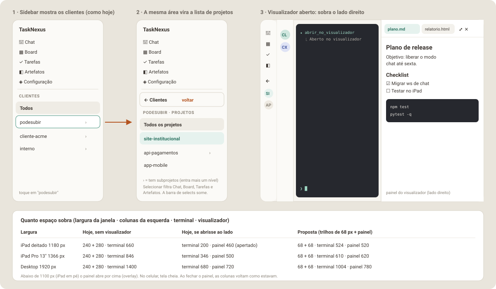

Parte 8 de 8
Parte 8 — Planejamento da Fase N: cliente → projeto na sidebar e espaço para o visualizador
O pedido: liberar espaço no desktop e no tablet. Ao selecionar um cliente, a própria lista de clientes vira a lista de projetos desse cliente, com uma seta ou botão para voltar à lista de clientes. Com isso sobra espaço no lado direito para abrir o visualizador de arquivos (o "dropdown" da Fase V).
É uma mudança pequena e localizada em cima do layout v2 atual: a sidebar continua onde está, com a mesma largura e o mesmo visual. Muda o conteúdo da seção de clientes e o que acontece com as colunas quando o visualizador abre.

8.1 Situação atual (medida no código)
| Coluna | Componente | Largura | O que tem |
|---|---|---|---|
| Sidebar | SidebarV2.jsx + ClienteList.jsx |
240 px (68 px recolhida) | menu (Chat, Board, Tarefas, Configuração) + "Clientes" (Todos + clientes) |
| Lista de chats | ChatSidebarV2.jsx + ChatList.jsx |
280 px (68 px recolhida) | conversas do cliente selecionado |
| Conteúdo | ChatV2.jsx (terminal), BoardV2, TarefasV2… |
o resto | no Board e em Tarefas há ainda uma barra de selects Cliente/Projeto (ClienteProjetoFilterBar) |
Problemas:
- Projeto não tem lugar na navegação. Só existe como select na barra do Board/Tarefas, que come uma faixa de ~45 px de altura, e o Chat não filtra por projeto (mostra "Raiz" ou o subprojeto em cada linha).
- Não há espaço para um painel à direita. Num iPad deitado (1180 px), 240 + 280 px deixam 660 px para o terminal. Abrir um visualizador ao lado deixaria ~200 px de terminal.
8.2 A proposta
8.2.1 Cliente → projeto na mesma área (drill-down)
- Nível Clientes (como hoje): "Todos" + clientes. Clientes que têm subprojetos mostram › à direita.
- Tocar num cliente com subprojetos: a seção inteira troca para o
nível Projetos daquele cliente, com animação curta de deslizar
(respeita
prefers-reduced-motion). Tocar num cliente sem subprojetos só o seleciona, como hoje. - Nível Projetos:
- botão ← Clientes no topo (altura 44 px, largura toda);
- rótulo
PODESUBIR · PROJETOS; - Todos os projetos (= cliente inteiro, igual a selecionar o cliente hoje); - Raiz (só se a pasta do cliente for elegível para chat,elegivel: true); - os projetos filhos diretos, em ordem alfabética; os que têm filhos mostram › e entram mais um nível (o botão de voltar vira ← api-pagamentos, o pai). - Selecionar um projeto filtra todas as telas: lista de chats, Board,
Tarefas e Artefatos. A barra de selects (
ClienteProjetoFilterBar) deixa de ser necessária e sai do Board e de Tarefas (e não entra em Artefatos). - Sidebar recolhida (68 px): no nível Projetos, o primeiro item é um
botão "←" e os projetos aparecem como avatares com iniciais (mesmo
.v2-cliente-avatar), com o nome notitle. - Celular: o
MobileMenuScreenusa o mesmoClienteList(variantemobile), então ganha o mesmo comportamento, com linhas de 54 px. - Memória: cliente, projeto e nível ficam salvos em
localStorage(escritorio::v2_nav_scope). Recarregar a página volta para o mesmo lugar.
8.2.2 Espaço à direita para o visualizador
- O visualizador da Fase V passa a abrir como painel à direita (é o "dropdown", só que ancorado na lateral). Continua saindo do botão Visualizador do cabeçalho, com abas, ⤢ Tela cheia e ✕ Fechar.
- Tela larga (≥ 1100 px: iPad deitado e desktop): o painel fica encaixado (o terminal encolhe, nada fica por baixo), e a sidebar e a lista de chats viram trilhos de 68 px automaticamente enquanto ele estiver aberto. Ao fechar, elas voltam exatamente como estavam.
- 641–1099 px (iPad em pé, Split View): o painel abre por cima (overlay), sem recolher nada.
- ≤ 640 px (celular): tela cheia, como já planejado.
- Largura do painel encaixado:
clamp(420px, 42vw, 780px).
| Largura da janela | Hoje, sem visualizador | Se abrisse ao lado hoje | Proposta |
|---|---|---|---|
| iPad deitado 1180 px | 240 + 280 · terminal 660 | terminal 200 · painel 460 | 68 + 68 · terminal 524 · painel 520 |
| iPad Pro 13" 1366 px | 240 + 280 · terminal 846 | terminal 346 · painel 500 | 68 + 68 · terminal 610 · painel 620 |
| Desktop 1920 px | 240 + 280 · terminal 1400 | terminal 680 · painel 720 | 68 + 68 · terminal 1004 · painel 780 |
8.2.3 Pontos para confirmar
| Ponto | Adotado | Alternativa |
|---|---|---|
| Recolher as colunas sozinho ao abrir o visualizador | Sim, só enquanto ele estiver aberto, sem mudar sua preferência salva | Não recolher; você recolhe à mão com os botões que já existem |
| Barra de selects Cliente/Projeto no Board/Tarefas | Sai (a sidebar faz o papel dela) | Manter as duas formas |
| Cliente sem subprojetos | Seleciona direto, sem entrar no nível Projetos | Sempre entrar no nível Projetos |
| Visualizador no chat | Painel à direita (substitui o dropdown ancorado no botão da Fase V) | Manter o dropdown ancorado |
8.3 Implementação (Dev)
8.3.1 Arquivos
frontend/src/utils/projectTree.js # NOVO: childrenOf, hasChildren, parentOf, labelFor (puro, testável)
frontend/src/hooks/useNavScope.js # NOVO: {clienteId, projetoId, level, path[]} + persistência em localStorage
frontend/src/layouts/v2/ClienteList.jsx # ALTERAR: níveis Clientes/Projetos, voltar, ›, avatares recolhidos
frontend/src/layouts/v2/SidebarV2.jsx # ALTERAR: repassa as props novas
frontend/src/layouts/v2/MobileMenuScreen.jsx # ALTERAR: repassa as props novas
frontend/src/layouts/v2/AppV2.jsx # ALTERAR: useNavScope no lugar de selectedClienteId; recolhimento forçado
frontend/src/layouts/v2/ChatSidebarV2.jsx # ALTERAR: filtra por subárvore do projeto; título "cliente / projeto"
frontend/src/layouts/v2/NewChatSheet.jsx # ALTERAR: já abre com cliente e projeto selecionados
frontend/src/layouts/v2/BoardV2.jsx # ALTERAR: usa projetoId global; remove ClienteProjetoFilterBar
frontend/src/layouts/v2/TarefasV2.jsx # ALTERAR: idem
frontend/src/layouts/v2/useClienteProjetoFilter.js # ALTERAR: recebe o escopo global em vez de estado local
frontend/src/utils/viewport.js # ALTERAR: + WIDE_VIEWPORT_QUERY = '(min-width: 1100px)'
8.3.2 Estado de navegação
// useNavScope() →
{
clienteId: 'podesubir' | null, // null = "Todos"
projetoId: 'podesubir/site' | null, // null = "Todos os projetos" do cliente
level: 'clientes' | 'projetos',
parentId: 'podesubir' | 'podesubir/api-pagamentos', // de quem os filhos estão sendo listados
enterCliente(id), enterProjeto(id), selectProjeto(id|null), back(), reset()
}
AppV2troca ouseState(selectedClienteId)poruseNavScope(), mantendo a inicialização a partir doselectedProjectIddoTerminalContext(comportamento atual: abrir já no cliente certo).handleSelectClientee o novohandleSelectProjetocontinuam chamandoselectProject(...)doTerminalContext, como hoje, para o chat ativo ficar em sincronia.- As telas recebem
selectedClienteIdeselectedProjetoId. A regra de filtro é por prefixo (collectSubtreeIds, já existente), para o caso de 3 níveis (cliente/projeto/sub) que já quebrou no Board.
8.3.3 Recolhimento forçado (sem mexer na preferência salva)
useSidebarCollapsed grava em localStorage a cada clique. O recolhimento
automático não pode sobrescrever isso. Então:
const viewerDocked = viewerOpen && isWide; // WIDE_VIEWPORT_QUERY
const sidebarEffective = sidebarCollapsed || viewerDocked;
const chatSidebarEffective = chatSidebarCollapsed || viewerDocked;
SidebarV2/ChatSidebarV2recebem o valor efetivo; os botões de recolher continuam alterando só a preferência.- Quando
viewerDockedmuda,AppV2disparawindow.dispatchEvent(new CustomEvent('escritorio:sidebar-toggled')), o mesmo evento que faz oTerminalPanelreajustar o xterm (ele espera ~250 ms, compatível com a transição de 180 ms decollapseLayout.js). - Abrir e fechar o painel encaixado também dispara esse evento, porque a largura do terminal muda.
8.3.4 Painel encaixado
- No
ChatV2(e noArtefatosV2da Fase A), o conteúdo vira uma linha flex:[conteúdo flex:1] [ViewerDock largura clamp(420px, 42vw, 780px)]. ViewerDockrenderiza o mesmoViewerPanelda Fase V. Abaixo de 1100 px o mesmo painel é renderizado como overlay (ViewerDrawer), e no celular como tela cheia (ViewerFullscreen).- Sem
transformem ancestral de elementoposition: fixed(fixedPositioningInvariant.test.js).
8.3.5 Ordem dos commits
| Passo | Entrega | Verificação |
|---|---|---|
| 1 | projectTree.js + testes (filhos diretos, ›, pai, 3 níveis) |
vitest |
| 2 | useNavScope + persistência + testes |
vitest |
| 3 | ClienteList com níveis e voltar (sidebar e mobile, aberta e recolhida) |
vitest (ClienteList.test.jsx, SidebarV2.test.jsx, MobileMenuScreen.test.jsx) |
| 4 | AppV2 + ChatSidebarV2 + NewChatSheet usando o escopo |
vitest (AppV2.test.jsx, ChatSidebarV2.test.jsx, NewChatSheet.test.jsx) |
| 5 | BoardV2/TarefasV2/useClienteProjetoFilter sem a barra de selects |
vitest (testes de Board/Tarefas/filtro atualizados) |
| 6 | WIDE_VIEWPORT_QUERY + recolhimento forçado + evento de refit |
vitest |
| 7 | Doc e aceite manual | checklist 8.4 |
O passo 6 pode entrar aqui mesmo que a Fase V ainda não exista: basta um
viewerOpen que por enquanto é sempre false. Quando a Fase V chegar, ela
só liga esse valor.
8.4 Testes e aceite
Automatizados
projectTree: filhos diretos de cliente e de projeto;hasChildren; ids parecidos (cliente×cliente2/x) não se misturam.ClienteList: tocar em cliente com filhos entra no nível Projetos; sem filhos só seleciona; ← Clientes volta; nível 3 mostra ← pai; recolhida mostra "←" e avatares; variante mobile com 54 px.useNavScope: grava e restaura dolocalStorage; ignora valor inválido (projeto que não existe mais → volta para "Todos").- Chat, Board e Tarefas filtram pela subárvore do projeto selecionado (inclui caso de 3 níveis).
- Recolhimento forçado não grava no
localStoragee disparaescritorio:sidebar-toggledao entrar e ao sair. fixedPositioningInvariant.test.jscontinua passando.
Manual (iPad deitado, iPad em pé, desktop, celular)
- Tocar em "podesubir": a lista vira os projetos dele com ← Clientes.
- Tocar em "site-institucional": lista de chats, Board, Tarefas e Artefatos mostram só esse projeto.
- ← Clientes volta; "Todos" limpa o filtro.
- Projeto com subprojetos entra mais um nível e volta para o pai.
- Recarregar a página: continua no mesmo cliente/projeto.
- Com a sidebar recolhida, a navegação por avatares funciona.
- (Com a Fase V) abrir o visualizador no iPad deitado: as duas colunas viram trilhos, o painel ocupa a direita, o terminal se reajusta sem texto quebrado; fechar devolve tudo como estava.
- Mesmo teste no iPad em pé: painel por cima, nada recolhe.
8.5 Riscos
| Risco | Mitigação |
|---|---|
| Muitos testes de Board/Tarefas dependem da barra de selects | Atualizar os testes no mesmo commit do passo 5; a lógica de filtro (prefixo) continua a mesma, só muda a origem do valor |
| Terminal com texto desalinhado depois de encolher | Disparar o evento de refit ao abrir/fechar o painel e ao forçar o recolhimento; testar rotação com o painel aberto |
| Usuário se perder no nível Projetos | Rótulo CLIENTE · PROJETOS e botão de voltar sempre visíveis; título da lista de chats mostra "cliente / projeto" |
| Projeto salvo que deixou de existir | useNavScope valida contra projects e cai para "Todos" |
8.6 Definição de pronto
- Nível Clientes → Projetos → subprojetos com voltar, na sidebar e no celular.
- Chat, Board, Tarefas (e Artefatos, quando existir) filtrados pelo escopo da sidebar; barra de selects removida.
- Recolhimento forçado pronto para o visualizador, sem alterar a preferência salva.
-
npm testverde; nenhuma mudança visual fora da seção de clientes e das colunas recolhidas com o painel aberto. - Documentação atualizada se a implementação divergir.